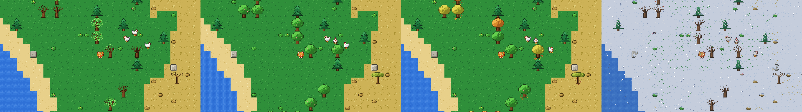

The same spot, every day for two weeks
This is the first post of the devlog. The plan is a short one every few days, about whatever is easiest to show.
I started Tabby Trails on September 21. Back then it was a cat in a field, in a window 256 pixels wide, with a rock to dig at.
I wanted to see what two weeks of work looks like, so I wrote a script. It checks out the last commit of each day, starts that version of the game, drops a new cat into the same world and takes a screenshot. The world is generated from a seed, so the same seed gives the same place every time. Mostly.
The clip above is those screenshots in order. About a week in, the field turns into a village, because villages got added and this cat happens to wake up in one. On October 4 the houses turn into acorns, and I'm keeping those.
The street lamps and windows turn on at night now:
And there are seasons:

It's an early beta and you can play it in the browser. If something's weird or broken, I'd like to hear about it. No rush.
Also lately
- Crickets purr instead of click.
- Caves have springs, lifts, ferries and crumbling bridges.
- You can craft a raccoon suit. Also a frog suit.
- Sproutlings: little wind-up helpers you program by stacking pieces.
- No more ghost cats after a server restart.